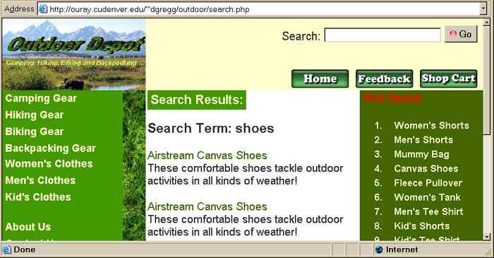
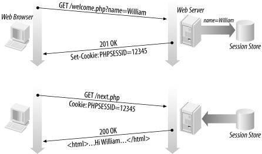
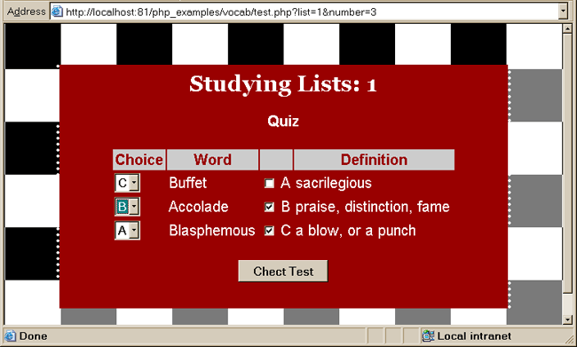

Object Oriented Programming in PHP
- An object is a software representation of something that exists in the
real world.
- Anything can be an object. A Television Set, An Employee, A Video, A
RomanNumeral, A String, A Date, A Web Page.
- In PHP, programs can contain objects that work
together.
- The fundamental goal of building modern software is to produce quality
software for a minimum cost. This includes being:
- Robust: Programs produce the right output for all anticipated
inputs as well as handling unexpected inputs.
- Adaptable: Need to evolve over time as environment and
expectations change.
- Reusable: Code should be designed such that it can be reused as
a component of different systems
- Object Orient Programming helps achieve these goals
Classes & Objects
- In PHP each Object is coded in a PHP class.
- These classes allow programmers to invent their own object types.
- Classes allow data (variables) and methods (functions/subroutines) to be
defined as a part of the class.
- Instances of a given class can be declared like other variables. You can
create arrays of objects of a given class and you can pass class objects to
functions.
- Classes help achieve the goals of Object Oriented programming by
facilitating:
- Encapsulation
- Abstraction
- Modularity
Classes Example PHP 5.0
- The class below (Search.php)
is a PHP 5.0 class. It has one private attribute "keyword" which is
a single keyword to be searched for and can conduct a search for keywords on a
database.
search.php
Online
Demo
<HTML>
<HEAD>
<META HTTP-EQUIV="Content-Type" CONTENT="text/html; charset=windows-1252">
<link rel="stylesheet" type="text/css" href="od.css">
<TITLE>Search Results</TITLE>
</HEAD>
<BODY>
<?php require("test.php"); ?>
<?php require("includes/header.html");
?>
<?php require("includes/lmenu.html");
?>
<H2><span>Search Results:</span></H2>
<?php
$keyword = $_POST['search'];
$k =
explode(" ", $keyword
);
$s = new Search();
for($i=0; $i < count($k); $i++
)
{ $s->setKeyword($k[$i]);
echo "<h3>Search Term: " . $s->getKeyword() . "</h3>";
echo $s->find();
}
?>
<?php require("includes/rmenu.html");
?>
<?php require("includes/footer.html");
?>
</BODY>
</HTML>
<?php
class Search
{
// member declaration
public $keyword = 'shoe';
public $conn = 'shoe';
public function Search
()
{
$keyword = 'shoe';
$conn = mysql_connect('localhost','uesrname','password')
or die( '<h2>Could not connect to mysql</h2></body></html>');
mysql_select_db('username') or die('Could not select database<br>');
}
// method declaration
public function getKeyword
() {
return $this->keyword;
}
// method declaration
public function setKeyword($k
) {
$this->keyword = $k;
}
public function find
()
{
$results = "";
$qry = "SELECT * FROM ITEM WHERE (ITEMNAME Like '%" . $this->keyword . "%')
"
. "OR (ITEMDESC
Like '%". $this->keyword . "%')";
$rs =
mysql_query($qry
)
or die('Search Query failed: ' . mysql_error() . '<br>'
);
// Loop through results set
while($row =
mysql_fetch_array($rs
))
{ // Display Specific Data values to screen
$results = $results . "<p><a href='product.php?cat=" . $row['CATID'] . "&item="
. $row["ITEMID"] . "'>";
$results = $results . $row["ITEMNAME"] . "</a><br>";
$results = $results . $row["ITEMDESC"] . "</p>\n";
}
if($results == "") $results = "<p>No results found</p>";
return $results;
}
}
?>

- There are differences between PHP 5's implementation of classes and that
found in PHP 4. Code for a PHP 4 compliant class can be found here:
search.php
-
Note: the principle difference between PHP 5 and PHP 4 is that in PHP 4
variables were declared as var not public and there was no public keyword in
front of the class definitions.
User Authentication
- There are many database applications in which restrictions need to be
applied to control user access. Some applications deal with sensitive
information such as bank account details, while others provide information or
services only to paying customers.
- These applications need to authenticate and authorize user requests,
typically by collecting a username and password, and checking these against a
list of valid users.
- User authentication includes the techniques used to build web database
applications that authenticate, authorize, and protect the data that is
transmitted over the Web. The topics include:
- How HTTP authentication works and how it can be used with Apache and PHP
- Writing PHP scripts to manage user authentication and authorization
- Writing PHP scripts that authenticate users against a table in a
database
- The practical aspects of building session-based web database
applications to authenticate users, including techniques that don't use HTTP
authentication
HTTP Authentication
- The HTTP standard provides support to authenticate and authorize user
access. When a browser sends an HTTP request for a resource that requires
authentication, a server can challenge the request by sending a response with
the status code of 401 Unauthorized.
- When an unauthorized response is received, the browser presents a dialog
box that collects a username and password.
- After the username and password have been entered, the browser then
resends the request containing an extra header field that encodes the user
credentials.
- This support doesn't authenticate a user or provide authorization to access a
resource or service. The server needs the encoded username and password to
establish the user's credentials and then decide if the user is authorized to
receive the requested resource. How the server performs the authentication
depends on the application. An Apache server, configured to protect resources
with authentication, uses a file that contains a list of usernames and encrypted
passwords, while other applications might use a table of users in a database.
Using Apache to Authenticate
- The simplest method to restrict access to an application is to use the Apache
authentication support. The Apache server can easily be configured to use HTTP
authentication to protect the resources it serves. Apache allows authentication
to be set up on a directory-by-directory basis by adding parameters to the
Directory setting in the httpd.conf configuration file or by creating
.htaccess
files which are placed in an individual directory that you want to protect.
- The
following example shows an
.htaccess file that protects the
resources-HTML files, PHP scripts, images, and so on-stored in the
/faculty/dgregg/public_html/ismg4800/notes directory:
AuthUserFile /faculty/dgregg/public_html/.htpasswd
AuthGroupFile /dev/null
AuthName ISMG4800
AuthType Basic
require user ismg4800 dgregg
- If PHP scripts and other sensitive resources are placed within a protected
directory, a user can access the application only by first passing the Apache
authentication.
- The Apache server responds with a challenge to unauthorized
requests for any resources in the protected directory.
- The
AuthType is
set to Basic to indicate the method that encodes the username and
password collected from the browser, and
- The
AuthName is set to the
name of the realm.
- Apache authorizes users who are listed in the require
setting by checking the username and password against those held in the
AuthUserFile
(the file /faculty/dgregg/public_html/.htpasswd).
- To create the username and password file you telnet
to your Web Server (e.g. Ouray) and type:
htpasswd -c faculty/dgregg/public_html/.htpasswd ismg4800
- To enter a second username and password you would:
htpasswd faculty/dgregg/public_html/.htpasswd
ismg2050
- For simple web database applications, Apache authentication provides a
suitable solution. When usernames and passwords need to be checked against a
database or some other source, or when HTTP authentication can't meet the
needs of the application, authentication can be managed by PHP.
HTTP Authentication with PHP
- PHP can access the credentials collected using the HTTP mechanisms introduced
in the last section, and can actually manage the HTTP authentication without
relying on Apache's configuration.
Access to User Credentials from PHP
- PHP-based authentication mimics the challenge/response system of Web
server-based authentication. When you explicitly send the appropriate HTTP
headers from a PHP script to a Web browser, an authentication dialog box will be
displayed. The dialog box prompts you to enter a username and password.
- PHP assigns the username and password entered to the global variables
$PHP_AUTH_USER
and $PHP_AUTH_PW, respectively. You can use these variables to
validate input against a stored list of usernames/passwords, such as those found
in a flat file, .htpasswd file, or database.
- The PHP
header()
function enables you to output a specific HTTP header string, such as a location
redirection, or in our case, a "401" response code: "Unauthorized". This type of
header, combined with a "WWW-Authenticate" header, will activate an
authentication dialog box.
- The script below determines if the the authentication global variables are
set and if they are displays them in the body of the response.
- Otherwise the code prompts the browser to display an authentication dialog box if no value
exists for either
$PHP_AUTH_USER or $PHP_AUTH_PW .
Note: The Server does not control the user
interface. The header()
function only serves to prompt the browser to interact with the user. The
browser actually "decides" (is configured) how to initiate the user input. Most
often this entails the display of a dialog box, but it does not have to be this
way. By extension, a browser will decide whether or not to prompt the user again
upon a failure.
<?php
if ((!isset( $PHP_AUTH_USER )) || (!isset($PHP_AUTH_PW))) {
header( 'WWW-Authenticate: Basic realm="Private"' );
header( 'HTTP/1.0 401 Unauthorized' );
echo 'Authorization Required.';
exit;
} else {
echo "You entered $PHP_AUTH_USER for a username.<BR>";
echo "You entered $PHP_AUTH_PW for a password.<BR>";
}
?>
- Applications can use the encoded credentials to support features that rely on
identifying the user. For example, an application that charges on a per-page
view basis might use the
$PHP_AUTH_USER
Managing HTTP Authentication with PHP
- The code sequence above does not really authenticate a user, since it only
checks that a value exists, but not a specific value. In this example, we
add an if...else statement in an attempt to validate the user input is found
in a .htpasswd file.
- This means that we need to:
- Use isset() to
verify whether or not values already exist for
$PHP_AUTH_USER and
$PHP_AUTH_PW.
- Prompt the browser to display an authentication dialog box if no value
exists for either
$PHP_AUTH_USER or $PHP_AUTH_PW.
- Search the .htpasswd file for the username entered to do this you need
to break the current line into two parts - the username and the password,
using
explode().
- If the username entered matches the current username, take the "salt" from the encrypted password.
The "salt" is the first 2 characters in the encrypted password. They are
the characters used by the crypt function to encrypt the password. Given
the encrypted password for joe below:
joe:WvzodahMR9USk
The actual plaintext password for user joe is not
"WvzodahMR9Usk". The plaintext password
is "abba001", and "zodahMR9Usk" is the DES-encrypted
version of that string. The "Wv" represents the crypt()
function's
salt argument.
- Use the salt to encrypt
$PHP_AUTH_PW using
crypt().
- Compare the original encrypted password to the result of the new
encryption. If the submitted password is correct, both encryptions should be
identical.
- If a match is found, set
$auth to 'true" to indicate that the
user is indeed authenticated, and stop the search by using break.
httpauth/index.php
Online
Demo
<?php
$auth = false; // Assume user is not authenticated
if (isset( $PHP_AUTH_USER ) && isset($PHP_AUTH_PW)) {
// Read the entire file into the variable $file_contents
$filename = '/path/to/.htpasswd';
$fp = fopen( $filename, 'r' );
$file_contents = fread( $fp, filesize( $filename ) );
fclose( $fp );
// Place the individual lines from the file contents into an array.
$lines = explode ( "\n", $file_contents );
// Split each of the lines into a username and a password pair
// and attempt to match them to $PHP_AUTH_USER and $PHP_AUTH_PW.
foreach ( $lines as $line ) {
list( $username, $password ) = explode( ':', $line );
if ( $username == "$PHP_AUTH_USER" ) {
// Get the salt from $password. It is always the first
// two characters of a DES-encrypted string.
$salt = substr( $password , 0 , 2 );
// Encrypt $PHP_AUTH_PW based on $salt
$enc_pw = crypt( $PHP_AUTH_PW, $salt );
if ( $password == "$enc_pw" ) {
// A match is found, meaning the user is authenticated.
// Stop the search.
$auth = true;
break;
} } } }
if ( ! $auth ) {
header( 'WWW-Authenticate: Basic realm="Private"' );
header( 'HTTP/1.0 401 Unauthorized' );
echo 'Authorization Required.';
exit;
} else {
echo '<P>You are authorized!</P>';
session-start();
$_SESSION['auth']=true;
}
?>
- The first time a browser requests this page, the script sends a challenge
response containing the
401 Unauthorized
- You need to check the auth variable in EVERY page that is restricted and
if it is false redirect to the login page above.
<?php
if (!isset( $_SESION['auth']) !! $_SESION['auth']!=true)
{ header("Location:
httpauth/index.php"); }
?>
- There are several HTTP status codes that are appropriate to use when denying
access to a user. In addition to the response code of
401 Unauthorized403 Forbidden4xx404 Not Found402 Payment Required
- Writing PHP scripts to manage the authentication process allows for flexible
authorization logic to be applied when processing a request.
- Authenticating a
user successfully against a list or table of known users doesn't automatically
authorize that user to access an application.
- The number of schemes for restricting access is limited only by a
developer's imagination.
- For example: A
user of a subscription-based service might supply a correct username and
password, but be denied access when a fee is 14 days overdue. Access might
be denied on Thursday evenings when system maintenance is performed.
Implementing such authorization schemes requires designing the appropriate
user table or tables.
Limits placed on IP addresses
- A PHP script can access the IP address from which a request was sent by
inspecting the server variable
$REMOTE_ADDR. This remote address can
restrict access.
- A simple example allows access only from a specific IP address.
This can be used to implement administration scripts that allow access only from
a specific computer. A variation is to allow access to
users on a particular network subnet. The example below limits access to the main
content of the script to requests sent from clients with a range of IP addresses
that begin with
132.194.
ipauth/index.php
Online
Demo
<?php
if (strncmp("132.194", $REMOTE_ADDR,
7) !=
0) {
header( 'HTTP/1.0 403 Forbidden' );
?>
<html><head><title>Information Systems Department</title></head>
<body><h2>403 Forbidden</h2>
<p>You cannot access this page from outside
CU Denver.
</body></html>
<?php
exit;
} ?>
<!-- HTML tags for the forbidden page -->
- Another limit that can be applied using the IP address is to help prevent
session hijacking-a problem.
Authentication Using a Database
- In a web database application, usernames and passwords can be stored in a
table rather than a file. This moves the data stored about users into a database
and can simplify the management of an application. In this section we develop
techniques to store usernames and passwords securely in a table.
- For Example:
CREATE TABLE Users (
username varchar(15) not null,
password varchar(50) not null,
PRIMARY KEY (username),
KEY password (password)
);
- This table defines two attributes:
username
password.
- The
username
- The
password
- It's unwise to store user passwords as plain text in this table. There are
many ways to retrieve passwords from a database, and even with good web site
practices and policies, storing plain-text passwords is a security risk.
- The users table containing encrypted passwords should look something like this:
| username |
password |
| m0soroka |
m0GNvdAjJ1BDw |
| cprather |
cpRQ0N4.ZOh0. |
| tjcraig |
tjNLEWbP2wdY. |
| jvan |
jvHXb3nOaykJM |
| brwood |
brkh5W4yLAyd. |
- When a script needs to authenticate a username and password collected from an
authentication challenge, a query is executed to find a user row in the users
table.
- The script begins by testing
$username. If it is not set, the function returns
false.
- The
$password is then encrypted using the crypt( ) function
with the first two characters from the $username as the
salt. This is then compared to the password associated with the username to
see if they match.
- First you need to validate that the username and password are found in the
table:
- The form below calls a PHP that updates an existing username with a new
password.
password.php
db.inc
Online
Demo
<?php
$auth = false; // Assume user is not authenticated
if (isset( $_POST['username'] ) && isset($_POST['passwd'])) {
require ('db.inc'
); // Contains mysql_connect & mysql_select_db
// Formulate the query
$sql = "SELECT * FROM Users WHERE
username = '" . $_POST['username']
. "'";
// Execute the query and put results in $result
$result = mysql_query( $sql )
or die ('Unable to execute query.');
// see if any rows in $result.
while ( $row
= mysql_fetch_array($rs) ) {
// A matching row was found - the user exists
// Now check to see if encrypted
password matches.
// Use the first two characters of the username as a salt
$salt
= substr(
$_POST['username'], 0, 2);
// Create the encrypted password
$cryptpw = crypt(
$_POST['passwd'], $salt
);
if( $cryptpw == $row
['password'])
$auth = true;
}
if ( !$auth ) {
header( 'WWW-Authenticate: Basic realm="Private"' );
header( 'HTTP/1.0 403 Forbidden' );
exit;
} else {
// Create the encrypted password
$cryptpw = crypt(
$_POST['newpasswd'], $salt);
// Update the user row
$sql
=
"UPDATE Users SET password = '$cryptpw'
WHERE " .
"username = '" . $_POST['username']
. "'";
// Execute the UPDATE
$rs = mysql_query( $sql ) or showerror( );
echo "Your
password has been updated";
} // end else
} // end if
else // Redirect to the password UPDATE form
header("Location: password.html");
?>
- Because
crypt( )
MySQL encryption
- MySQL provides the encryption function
password( ) that can be used
instead of the crypt( ) function; we introduced this function in
Chapter 3. The MySQL password( ) function can be incorporated into the
SQL update or insert queries:
UPDATE Users
SET password = password($password)
WHERE username = '$username';
- Like
crypt( ), the MySQL password( ) function is a one-way
function, but it is simpler to use because it doesn't require a salt string.
However, when identical passwords are used, they are stored as identical
encrypted strings.
- Another disadvantage to using the MySQL
password( )
function is that the password is transmitted between the web server and the
MySQL DBMS in its unencrypted form.
- It is usually recommend that
crypt( ) be used
rather than the MySQL password( ) function when building web database
applications.
Encrypting other data in a database
- The PHP
crypt( ) and MySQL password( ) functions can be
used only to store passwords, personal identification numbers (PINs), and so on.
- These functions are one-way: once the original password is encrypted and
stored, you can't get it back because there are no corresponding decode
functions.
- These functions can't be used to store sensitive information an
application needs to retrieve. For example, when a customer submits an order,
the customer's credit-card number needs to be decrypted and used by the
application to complete the transaction.
- To store sensitive information the application needs to use, you need two-way
functions that use a secret key to encrypt and decrypt the data. We discuss
this later.
Session Management (again)
- PHP's session management library offers the key characteristics required
of a session management library:
- It stores session data on the server. Because the library uses different
storage modules, you can keep the data in plain text files, shared memory,
or databases. The exact location of data is not really important (as long
the performance of the medium is sufficient).
- It uses a cryptographically random session ID to identify a user.
- It saves the session ID (and only the session ID) on the client side
using cookies, GET/POST, or the script path. (The PHP library provides all
of these methods; we show how to use them a little later.)
- If the user disables cookies, the application can use other means of
session propagation.
- When a user first enters the session-based application by making
a request to a page that starts a session, PHP generates a session ID and
creates a file that stores the session-related variables. PHP sets a cookie to
hold the session ID in the response the script generates.
- The browser then records the cookie and includes it in subsequent
requests. In the example below, the script welcome.php records session variables in the
session store, and a request to next.php then has access to those
variables because of the session ID.

Functions for Accessing Sessions in PHP
-
Boolean session_start( )
- Initializes a session by either creating a new session or using an
identified one. Checks for the variable
$PHPSESSID in the HTTP
request. If a session identifier isn't included in the request, or an
identified session isn't found, a new session is created. If a session ID is
included in the request, and a session isn't found, a new session is created
with the PHPSESSID encoded in the request. When an existing
session is found, the session variables are read from the session store and
initialized. Using PHP's default settings, a new session is created as a file
in the /tmp directory. This function always returns true.
-
string session_id([string id])
- Can be used in two ways: to return the ID of an initialized session and to
set the value of a session ID before a session is created. When used to return
the session ID, the function must be called without arguments after a session
has been initialized. When used to set the value of the session ID, the
function must be called with the ID as the parameter before the session has
been initialized.
-
Boolean session_register(mixed name [, mixed ...])
- Registers one or more variables in the session store. Each argument is the
name of a variable, or an array of variable names, not the variable itself.
Once a variable is registered, it becomes available to any script that
identifies that session. This function calls the
session_start( ) code internally if a session has not been
initialized. The session_unregister( ) function is called to remove a
variable from the session. Returns
true when the variables are
successfully registered.
-
Boolean session_is_registered(string variable_name)
- Returns
true if the named variable has been registered with
the current session and false otherwise. Using this function to
test if a variable is registered is a useful way to determine if a script has
created a new session or initialized an existing one.
-
session_unregister(string variable_name)
- Unregisters a variable with the initialized session. Like the
session_register( ) function, the argument is the name of the
variable, not the variable itself. Unlike the session_register( )
function, the session needs to be initialized before calling this function.
Once a variable has been removed from a session with this call, it is no
longer available to other scripts that initialize the session. However, the
variable is still available to the rest of the script that calls
session_unregister( ).
-
session_unset( )
- Unsets the values of all session variables. This function doesn't
unregister the actual session variables. A call to
session_is_registered( ) still returns
true for the
session variables that have been unset.
-
Boolean session_destroy( )
- Removes the session from the PHP session management. With PHP's default
settings, a call to this function removes the session file from the /tmp
directory. Returns
true if the session is successfully destroyed
and false otherwise.
Session Management Without Cookies
- A change that can be made to the default PHP session management is to encode
the
$PHPSESSID value as an attribute in a GET or
POST method request and avoid the need to set a cookie.
- If users disable cookies when repeated requests are made, the session data
is lost. Because a cookie isn't sent from the browser, the
variable
$PHPSESSID is never set.
- The other side effect is that
each time the page is requested, a session file is created in the /tmp
directory. Many users configure their browsers to not accept cookies, and
session-based applications won't work unless they are written to handle the
missing cookie.
- The session identifier that would have been sent as a cookie can be transmitted in a
GET or POST method
request. While the
session_start( ) function can use $PHPSESSID set by
either a GET or POST method request, however it is more
practical to use the GET variable.
Encoding the session ID as a GET variable
- Scripts that generate embedded links to pages that use session variables need
to include a
GET attribute named PHPSESSID in the URL.
This can be done using the basic PHP string support and calls to
session_id( ). For example:
<?php
// Initialize the session
session_start( );
// Generate the embedded URL to link to
// a page that processes an order
$orderUrl = "/order.php?PHPSESSID=" . session_id( );
?>
<a href="<?=$orderUrl ?>">Create Order</a>
- To aid the creation of URLs that link to session-based scripts, PHP sets the
constant
SID that contains the session ID in the form suitable to
use as a URL query string. If there is no session initialized, PHP sets the
value of SID to be a blank string. If a session is initialized, it
sets the SID to a string containing the session ID in the form:
PHPSESSID=be20081806199800da22e24081964000
- By including the value of
SID when URLs are constructed, the
hypertext links correctly identify the session. A link that points to a script
that expects a session ID can be encoded like this:
<?php
// Initialize the session
session_start( );
?>
<a href="/order.php?<?=SID?>">Create Order</a>
- As an alternative to writing code to formulate the session ID into the URL,
PHP includes a URL rewrite feature that automatically modifies
reference URLs to include the session ID as a
GET attribute. To
activate this feature, PHP needs to be configured with - -enable-trans-id
and then recompiled. Once URL rewrite is activated, PHP parses the HTML
generated by scripts and automatically alters the embedded URLs to include the
PHPSESSID query string. The URL rewrite feature has the
disadvantage that extra processing is required to parse every generated page.
Garbage Collection
- While it is good practice to build applications that provide a way to end a
session--with a script that makes a call to
session_destroy( )--there is no guarantee that a user will log out by
requesting the appropriate PHP script.
- PHP session management has a built-in
garbage collection mechanism that ensures unused session files are eventually
cleaned up. This is important for two reasons: it prevents the directory from
filling up with session files that can cause performance to degrade and, more
importantly, it reduces the risk of someone guessing session IDs and hijacking
an old unused session.
Complete Session Management/User Authentication Example
- The example code below requires a student to log in to access a vocabulary
testing program.
- Once in the program, the student is required to choose one or more
vocabulary lists to study from and the number of words to look at at a time
(fewer is easier).
- The program scrambles the word & definition pairs, then divides them into
groups (each with the requested number of words).
- The program presents the requested number of words to the user on
subsequent pages until all of the words have been defined correctly.
- The program uses sessions to store the arrays between page requests - so
the next group of words/definitions is loaded with the nest page request.
- The program uses JavaScript to check the answers.
- The program uses an include file to connect to the database & to check if
the person is logged in.
Online
Demo
(you can use guest, guest1 to log in)

- The include file is used to verify the user is logged in - if not they are
redirected to a login page. It also contains the code to connect to the
database used for this application.
db.inc
<?php
session_start();
if(!isset($_SESSION['auth']) || isset($_SESSION['auth'])==false)
{
header("Location: index.html");
exit;
}
$conn = mysql_connect('localhost','username','password')
or die( '<h2>Could not connect to mysql</h2></body></html>');
mysql_select_db('database') or die('Could not select database<br>');
?>
- The password.php file is used to check the user has a valid username and
password AND sets a session variable $_SESSION['auth'] indicating the user is
authorized to view subsequent pages.
- If the user is authorized the page redirects to index.php so the student
can begin the exam.
- If the user is not passing in the username & password parameters they are
redirected back to the login page.
- If the login credentials are incorrect they are given a 403 error: Access
Denied/Access Forbidden
password.php
<?php
// Assume user is not authenticated
$auth = false;
if (isset($_POST['username']) && isset($_POST['passwd']))
{
$username= $_POST['username'];
$passwd = $_POST['passwd'];
session_register('auth');
$_SESSION['auth'] = true;
require ('db.inc'); // Contains mysql_connect & mysql_select_db
// Formulate the query
$sql = "SELECT * FROM Users WHERE username = '$username'";
echo $sql;
// Execute the query and put results in $result
$rs = mysql_query( $sql ) or die ('Unable to execute query.');
// see if any rows in $result.
while ( $row = mysql_fetch_array($rs) ) {
// Check to see if encrypted password matches.
// Use the first two characters of the username as a salt
$salt = substr($username, 0, 2);
$cryptpw = crypt($passwd, $salt);
echo $cryptpw . " " . $row['password'];
if( $cryptpw == $row['password']) $auth = true;
}
$_SESSION['auth'] = $auth;
if (!$auth) {
header( 'WWW-Authenticate: Basic realm="Private"' );
header( 'HTTP/1.0 403 Forbidden' );
exit;
} else {
header("Location: index.php");
} // end else
} // end if
else
//Redirect to the password UPDATE form
header("Location: index.html");
?>
- The index.php file is just a form allowing the student to select the
vocabulary list(s) to study and the number of words per page. It is a
php file because it includes db.inc which is used to verify the student is
logged in.
- The test.php is called from index.php and does may things.
- The first block of code retrieves the parameters and queries the database.
index.php
test.php
<?php
require ('db.inc');
$choices = array("A", "B", "C", "D", "E", "F", "G", "H", "I", "J", "K", "L",
"M", "N", "O", "P", "Q", "R", "S", "T", "U", "V", "W", "X", "Y", "Z", "AA",
"BB", "CC", "DD", "EE", "FF", "GG", "HH", "II", "JJ", "KK", "LL", "MM", "NN",
"OO", "PP", "QQ", "RR", "SS", "TT", "UU", "VV", "WW", "XX", "YY", "ZZ");
if(isset($_GET['list']))
{
// Make database connection
$lists = $_GET['list'];
$number = $_GET['number'];
$list = explode( ",", $lists);
$qry = "Select * from Words Where ";
$ii = 0;
foreach( $list as $id)
{ if ($ii > 0) $qry = $qry . " or ";
$qry = $qry . " ListID = $id ";
$ii++;
}
$qry = $qry . " ;";
$rs = mysql_query( $qry ) or die ('Unable to execute query.');
$page=0;
?>
- The second block of code in test.php loops through the results set to
create arrays of words and definitions.
- An array of $numbers representing indexes to access the array is then
created and shuffled so that the words are not presented in the same order
each time the user takes the test.
- This array of numbers is then "chunked" using array_chunk() to divide the
array into multiple arrays, each with the number of words to be shown on a
single page.
- Finally, the array of $nums (short arrays with indexes), words,
definitions etc. are added as session variables.
<?php
$counter = 0;
while($row = mysql_fetch_array($rs)){
$word[$counter] = $row["Word"];
$def[$counter] = $row["Definition"];
$counter++;
}
$numbers = range(0, $counter-1);
shuffle($numbers);
$nums = array_chunk($numbers,$number,false);
session_register("nums", "word", "def", "lists", "atatime");
$_SESSION["nums"] = $nums;
$_SESSION["word"] = $word;
$_SESSION["def"] = $def;
$_SESSION["lists"] = $lists;
$_SESSION["atatime"] = $number;
} // end if isset
?>
- The third block of code is called when the user is calling-up the second
page of words to study.
- It retreives the session parameters and gets the current page number to
display.
<?php
else
{
$nums = $_SESSION["nums"];
$word = $_SESSION["word"];
$def = $_SESSION["def"];
$page = $_GET['page'];
$lists = $_SESSION["lists"];
} // end else
?>
- The 4th block of code checks to see if we have completed the test.
If we have not then it displays the group of words for the current page
number.
- The
$nums array contains the indexes of the words/definitions
to be displayed.
- This array is scrambled ad stored in a second array
$nnums so
the definitions are not displayed in the same order as the words.
<?php
if($page < count($nums))
{
$number = count($nums[$page]);
for($jj=0; $jj<$number; $jj++)
$nnums[$jj] = $nums[$page][$jj];
shuffle($nnums); // scramble the indexes for the definitions
$list = "";
// create the option choices for each selection list
// the value is the index of the definition
// (which will match the index
of the correct word).
for($i=0; $i<$number; $i++)
$list = $list . "<option value='" . $nnums[$i] . "'>$choices[$i]</option>\n";
?>
- The HTML below represents the page displayed to the users taking the test.
- It presents the words, scrambled definitions and a selection box that
allows to student to choose the definition they think matches the current
word.
- It also includes JavaScript code to keep track of the definitions the user
has selected and to check the answers.
<HTML><HEAD>
<link rel=stylesheet href="styles/screen_check.css">
<TITLE>Lists: <?php echo $lists ?></TITLE>
</HEAD>
<BODY>
<div>
<H2 align=center><span>Studying Lists: <?php echo $lists
?></span></H2>
<FORM NAME=frmTest value="" >
<H4 ALIGN=CENTER>Quiz</H4>
<TABLE WIDTH="80%" BORDER=0 CELLSPACING=2 CELLPADDING=2 ALIGN=CENTER>
<TR>
<TH>Choice</TH>
<TH>Word</TH>
<TH colspan=2> </TH>
<TH>Definition</TH>
</TR>
<?php
// loop to display each word/definition for this page
for($i=0; $i<$number; $i++)
{
?>
<TR>
<TD>
<select onchange="update(this.form, this);" name='
<?php echo $nums[$page][$i]
."'>\n$list"
?>
</select></TD>
<TD><?php echo $word[$nums[$page][$i]]; ?></TD>
<TD><input type=checkbox name="<?php echo $choices[$i]; ?>"></TD>
<TD><?php echo $choices[$i]; ?></TD>
<TD><?php echo $def[$nnums[$i]]; ?></TD></TR>
<?php
} ?>
</TABLE></P>
<P align=center>
<INPUT TYPE=button VALUE="Chect Test" NAME="CHK" onclick="return
check(this.form);">
</P>
</FORM>
</div>
<script>
var choices = ["A", "B", "C", "D", "E", "F", "G", "H", "I", "J", "K", "L",
"M", "N", "O", "P", "Q", "R", "S", "T", "U", "V", "W", "X", "Y", "Z", "AA",
"BB", "CC", "DD", "EE", "FF", "GG", "HH", "II", "JJ", "KK", "LL", "MM", "NN",
"OO", "PP", "QQ", "RR", "SS", "TT", "UU", "VV", "WW", "XX", "YY", "ZZ"];
function update(form, sel)
{
var index = sel.selectedIndex;
var cbox = eval("form." + choices[index]);
cbox.checked=true;
}
function check(form)
{
var j = <?php echo $page;
?>;
var num = <?php echo $number;
?>;
var missed = 0;
for (var i=0; i < form.elements.length; i++)
{
if(!isNaN(form.elements[i].name))
{
var correct = form.elements[i].name;
var answer = form.elements[i].options[form.elements[i].selectedIndex].value;
if (correct != answer) missed++;
}
}
if(missed > 0) {
for (var i=0; i < num; i++)
{
var cbox = eval("form." + choices[i]);
cbox.checked=false;
}
alert("You missed " + missed + "\nPlease try again");
return false;
}
else
{
alert("Congratulations you got them all right!\nYou are ready for the next
test!");
window.location.href = 'test.php?page=' + (page+1);
return true;
}
}
</script>
</BODY>
</HTML>
- This final block of code is called when the student has
completed the test. The page variable is greater than the number of
pages to display.
- The page displays a message congratulating the user
and a link so the user can begin taking the test again.
- It also
unregisters all of the session variables (except the auth variable that
indicates the user is logged in) to free up space on the server.
<?php }
else {
?>
<HTML><HEAD>
<link rel=stylesheet href="styles/screen_check.css">
<TITLE>Lists: <?php echo $lists ?></TITLE>
</HEAD>
<BODY>
<div>
<H2 align=center><span>Studying Lists:
<?php echo $lists ?></span></H2>
<H3 align=center>Congratulations you have completed studying the words
<?php
echo $_SESSION["atatime"]; ?> at a time</H3>
<center><table border=0 width=30%><tr><td>
<br>
<center><img src="congrats.gif"></center>
<br>
</td></tr></table></center>
<p align=center><a href=index.php>Click here to start again with more at a
time</a></p>
</BODY>
</HTML>
<?php
// free up session resources
session_unregister("nums");
session_unregister("word");
session_unregister("def");
session_unregister("lists");
session_unregister("atatime");
} ?>
Other Materials